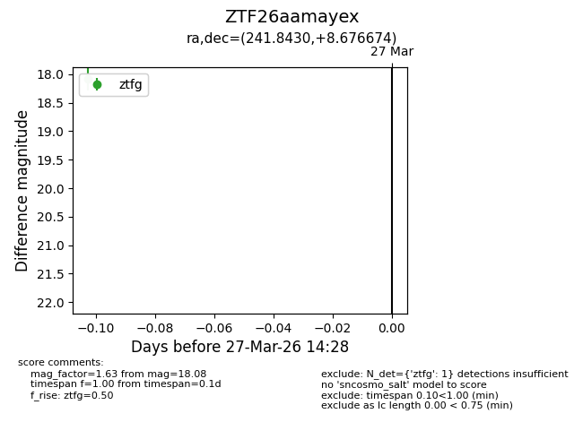
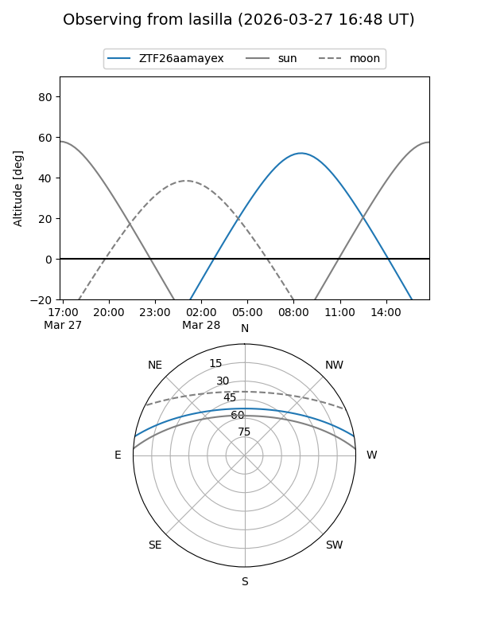
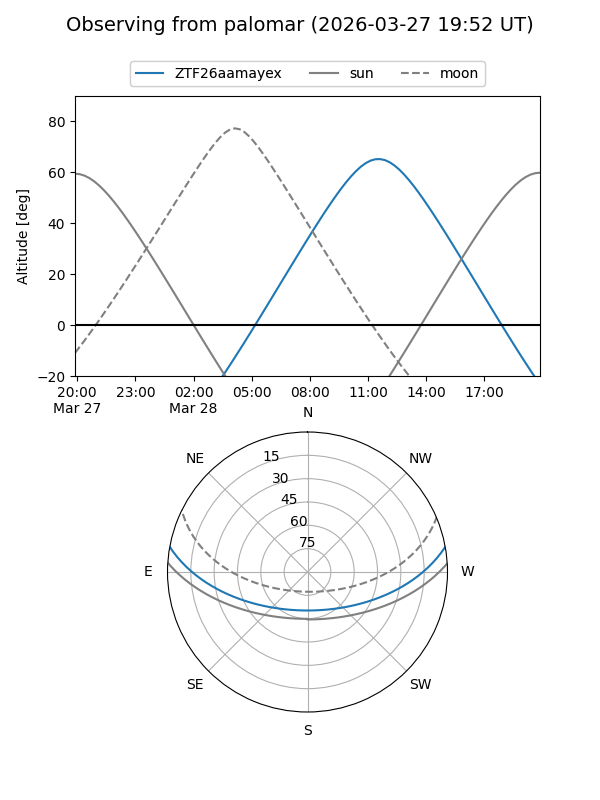

ZTF26aamayex
Target ZTF26aamayex at 2026-03-27 14:31
Aliases and brokers:
FINK: link
Lasair: link
ALeRCE: link
alt names
ZTF26aamayex (ztf,fink_ztf)
Coordinates:
equatorial (ra, dec) = 241.8430,+8.67667
equatorial (HMS+DMS) = 16:07:22.31,+08:40:36.03
galactic (l, b) = (20.7100,+40.25442)
Flags:
Photometry:
last ztfg=18.08
1 ztfg detections
Lightcurve

Visibility


Additional plots